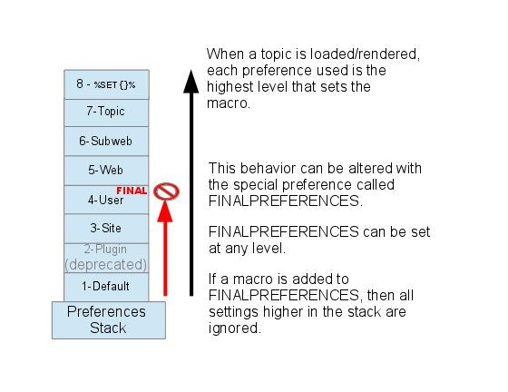

Preference Settings
A
preference setting lets you define a simple
macro that will be expanded in your output. In addition:
- preference settings are used by Plugins to control their features,
- preference settings are used for Access Control.
A preference setting looks like this:
[multiple of 3 spaces] * [space] Set [space] MACRONAME [space] = [space] value
Example:
* Set WEBBGCOLOR = #FFFFC0
Macros defined using preference settings are expanded by enclosing their name in percent signs. So when you write
%WEBBGCOLOR%, it gets expanded to
#FFD8AA
Preferences can also be set dynamically by using the
%SET{"setting" value="value"}% Macro. With the exception of these dynamic preference settings, preferences are always taken from the most current topic revision,
even when accessing previous revisions of a topic.
Preferences can be defined in a number of places:
- DefaultPreferences (Foswiki upgrades overwrite this topic)
- In (some) plugin documentation topics. (Deprecated)
- SitePreferences
- In user topics, if the user has one (yours is Main.WikiAdmin)
- WebPreferences in each web.
- Sub-webs inherit the WebPreferences of their parent
- In the topic when it is loaded from the Store
- In SET macros for run-time preferences
Set statements which occur at numerically higher locations override macros of the same name defined at lower numbered levels,
unless the macro was listed in a finalpreferences setting (finalised) at a lower-numbered level. When a preference is
finalized, the macro is locked to the value at that level;
SET statements at higher-numbered levels are ignored. Looking at it graphically:

Access Control rules (ACLs) are also written as preference settings.
ACLs cannot be dynamically modified by the %SET{}% macro.
Writing preference settings
Preference settings are written as a simple bullet. In
TopicMarkupLanguage (TML)
they are written as
3-spaces,asterisk,equals,value
* Set MYSETTING = My setting value
When using the Wysiwyg editor, click the "Bullet" button and write the setting
as a simple bullet. Don't include the asterisk or the leading spaces.
Spaces between the = sign and the value will be ignored. You can split a value over several lines by indenting following lines with spaces - as long as you don't try to use * as the first character on the following line. (Not when using the Wysiwyg editor.)
Example:
* Set MACRONAME = value starts here
and continues here

preference settings can easily be disabled with a # sign. Example:
* #Set DENYWEBCHANGE = %USERSWEB%.UnknownUser
Whatever you include in your bullet style setting will be expanded on display, exactly as if it had been entered directly (though see Parameters, below). (%SET{}% settings are expanded during the set process. See
VarSET for further information.
Example: Create a custom logo macro
- To place a logo anywhere in a web by typing
%MYLOGO%, define the preference settings in the web's WebPreferences topic, and upload a logo file, ex: mylogo.gif. You can upload by attaching the file to WebPreferences, or, to avoid clutter, to any other topic in the same web, e.g. LogoTopic. Sample preference setting in WebPreferences:
* Set MYLOGO = %PUBURL%/%WEB%/LogoTopic/mylogo.gif
Preference settings are
case sensitive. (Foswiki by convention always writes settings in upper case.)
* Set lower = This is LOWER
* Set LOWER = This is UPPER
* Set LoWeR = This is MIXED
Expand %lower%, %LOWER% and %LoWeR%
Expand %lower%, %LOWER% and %LoWeR%.
Hiding preference settings
You can hide preference settings in the output by enclosing them in HTML comments; for example,
<!--
* Set HIDDEN = This will be invisible in the output
-->
You can also set preference settings in a topic by clicking the link
Edit topic preference settings under
More topic actions. Preferences set in this manner are known as 'meta' preferences and are not visible in the topic text, but take effect nevertheless.
If the same setting appears as both an inline setting, and in topic meta settings, the meta setting will override the inline setting! There is no warning when the setting is duplicate. This should be avoided to prevent confusion.
 Caution
Caution If your topic will be used in an INCLUDE, it is recommended to not use HTML comments. instead, set preferences
into the topic metadata by using the "Edit Settings for this topic" button on the "More topic actions" page. Settings in an included topic are always ignored, but nested comments will break the HTML.
Order of preference settings
If you are setting a preference and using it in the same topic, note that Foswiki reads all the bullet style preference settings from the saved version of the topic before it displays anything. This means you can use a setting anywhere in the topic, even if you set it at the very end.
But beware: it also means that if you change the setting of a macro you are using in the same topic,
Preview will show the wrong thing, and you must
Save the topic to see it correctly. (
%SET{}% style settings
are assigned during the topic rendering, and their effect will be visible in the preview.)
Preference settings and topic revision history
Foswiki always reads the bullet style settings from the most current topic revision, so viewing older revisions of a topic can show unexpected results.
And especially important,
bullet style preference settings are never overridden or set in when a topic content is obtained by "%INCLUDE{". However
%SET{ style settings can be overidden when an INCLUDE is expanded.
in the below example about weather conditions, note the difference in the CONDITIONS expansion
Parameters
The following block of code was read from PreferenceSettings, and the "Set" statements were defined in WebPreferences
Macros defined using preference settings can take parameters. These are symbols passed in the call to the macro to define local macros that will be expanded in the output.
For example, Both System.Macros and PreferenceSettings have a Set statement that defines the %CONDITIONS% macro as shown here:
* Set CONDITIONS = According to [[%TOPIC%]] the %WHAT% is %STATE% today (Set in ...).
The %TOPIC% shows where the CONDITIONS macro is expanded, and the ... shows where the Set statement was actually defined.
You can call this macro passing in values for WHAT and STATE. For example:
-
%CONDITIONS{WHAT="sea" STATE="choppy"}%
- expands to
%CONDITIONS{WHAT="sea" STATE="choppy"}%
Note that %CONDITIONS% expands differently when this example is viewed in
Macros.
This is because Set statement are not active in included topics. The including topic's set statements are used.
Parameter defaults
- The special parameter name
DEFAULT gets the value of any unnamed parameter in the macro call.
- Parameter macros can accept a
default parameter so that they expand to something even when a value isn't passed for them in the call.
Example:
* Set WEATHER = It's %DEFAULT{default="raining"}%.
-
%WEATHER% expands to %WEATHER%
-
%WEATHER{"sunny"}% expands to %WEATHER{"sunny"}%
The standard
formatting tokens can be used in parameters. They will be expanded immediately when the macro is instantiated.
Note that parameters
override all other macros, including system defined macros, in the expansion of the macro where they are used.
Access Control Settings
These are special types of preference settings to control access to content.
AccessControl explains these security settings in detail. Parameters are
not available in access control settings.
AccessControl settings cannot be set or changed by the
%SET{}% macro.
Local values for preferences
Certain topics (user, plugin, web, site and default preferences topics) have a problem; macros defined in those topics can have two meanings. For example, consider a user topic. A user may want to use the wiki text editor, but
only when editing their home topic. The rest of the time, they want to use the default Wysiwyg editor. This separation is achieved using
Local in place of
Set in the macro definition. For example, if the user sets the following in their home topic:
* Local NOWYSIWYG = 1
Then, when they are editing any other topic, they will get the Wysiwyg editor. However, when they are editing their home topic they will get the wikitext editor.
Local can be used wherever a preference needs to take a different value depending on where the current operation is being performed.
%SHOWPREFERENCE% can be used to get a listing of the values of all macros in their evaluation order, so you can see macro scope if you get confused.
%SHOWPREFERENCE{"CONDITIONS"}% expands into: